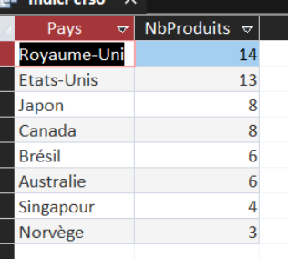

INDICATEUR 02
Dans une démarche de respect de l’environnement et d’optimisation de son offre, KDou cherche à mieux connaître l’origine de ses produits. Plus un produit vient de loin, plus son transport pèse sur l’environnement. Cette requête permet donc de savoir combien de produits proviennent de chaque pays situé hors de l’Union européenne.
SELECT Y.PaysFR AS Pays, Count(P.RefProd) AS NbProduits
FROM (Produit AS P
INNER JOIN Fournisseur AS F ON P.NoFour = F.NoFour)
INNER JOIN Pays AS Y ON F.NoPays = Y.NoPays
WHERE Y.UE = "Hors"
GROUP BY Y.PaysFR
ORDER BY Count(P.RefProd) DESC;
